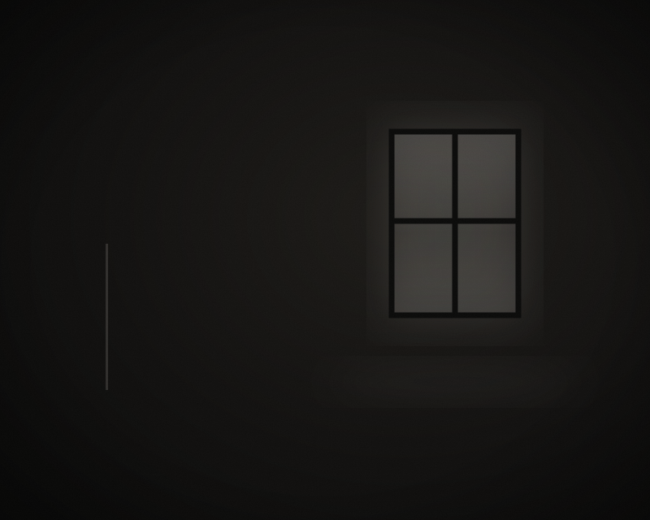

Format 01
Beer & Beats
Afterwork ohne Programm. Gute Musik, kaltes Bier, feine Leute. Fühlt sich an wie eine House-Party im erweiterten Freundeskreis – weil es genau das ist.

A format by VIBEON
VIBEON. Eventformate, über die man am nächsten Tag spricht.
Der Vibe ist an.
Der Vibe ist an. Bregenz. Beer & Beats. Exodus. Secret X.
Es gibt Abende, die bleiben.
Nicht wie eine Veranstaltung – wie ein Moment, der genau so passieren musste.
Dafür steht VIBEON: Eventformate rund um Musik, Menschen und Orte, die man sonst nicht erlebt.
Hinter VIBEON stehen Gastgeber, keine Veranstalter.
Zwischen Wohnzimmer und Club.
Zwischen Galerie und Gastronomie.
Zwischen Kultur und Lifestyle.
Format 01
Afterwork ohne Programm. Gute Musik, kaltes Bier, feine Leute. Fühlt sich an wie eine House-Party im erweiterten Freundeskreis – weil es genau das ist.

A format by VIBEON
Format 02
Die Nacht, konzentriert. Elektronische Musik, dunkle Räume, keine Ablenkung.
A format by VIBEON
Format 03
Datum steht. Location nicht. Wo es stattfindet, erfährst du am Tag X – aber nur, wenn du auf der Liste bist.
A format by VIBEON
DJ Live-Act & Violinist · Bregenz
Elektronische Musik trifft Live-Violine. Nima Lovario legt auf – und zieht die E-Violine live über den Beat.
House · Afro House · Melodic Techno
Galerie · Dachterrasse · Hafen · Industriefläche · Historisches Haus · Leerstand
Die Liste. Nur Termine, Drops und Locations. Der Vibe ist an.
Menschen vor Programm.
Atmosphäre vor Show.
Orte vor Hallen.
Momente vor Terminen.
Wer drauf steht, erfährt zuerst, was passiert – und bei Secret X als Einziger, wo. Keine Newsletter-Flut. Nur Termine, Drops und Locations.
Für Locations, Partner & Kooperationen: hallo@vibe-on.at